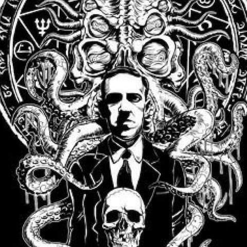

Lovecraft joined the small "Kalem Club" of writers when he first moved to New York, and would later be the center of a wider body of authors known as the "Lovecraft Circle." This group wrote stories that frequently shared details among them. He was also a prolific letter writer. He maintained a correspondence with several different authors and literary proteges. According to some estimates, he wrote approximately 100,000 letters over the course of his life. In these letters, he discussed his worldview and his daily life, and tutored younger authors, such as August Derleth, Donald Wandrei, and Robert Bloch. Throughout his adult life, Lovecraft was never able to support himself from earnings as an author and editor. He was virtually unknown during his lifetime and was almost exclusively published in pulp magazines before he died in poverty at the age of 46, but is now regarded as one of the most significant 20th-century authors of supernatural horror fiction. Among his most celebrated tales are "The Call of Cthulhu", "The Rats in the Walls>", >At the Mountains of Madness, The Shadow over Innsmouth, and The Shadow Out of Time. His writings form the basis of the Cthulhu Mythos, which has inspired a large body of pastiches across several mediums drawing on Lovecraft's characters, setting and themes, constituting a wider subgenre known as Lovecraftian horror |